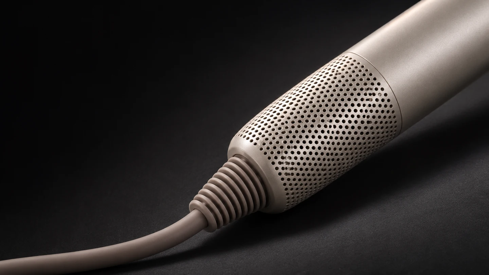
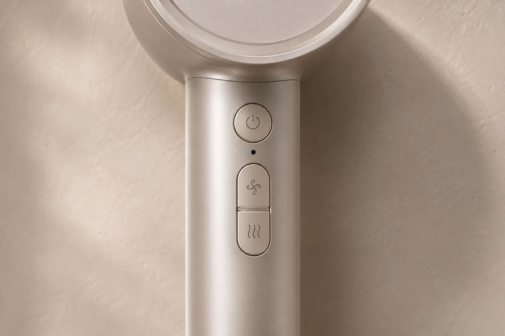
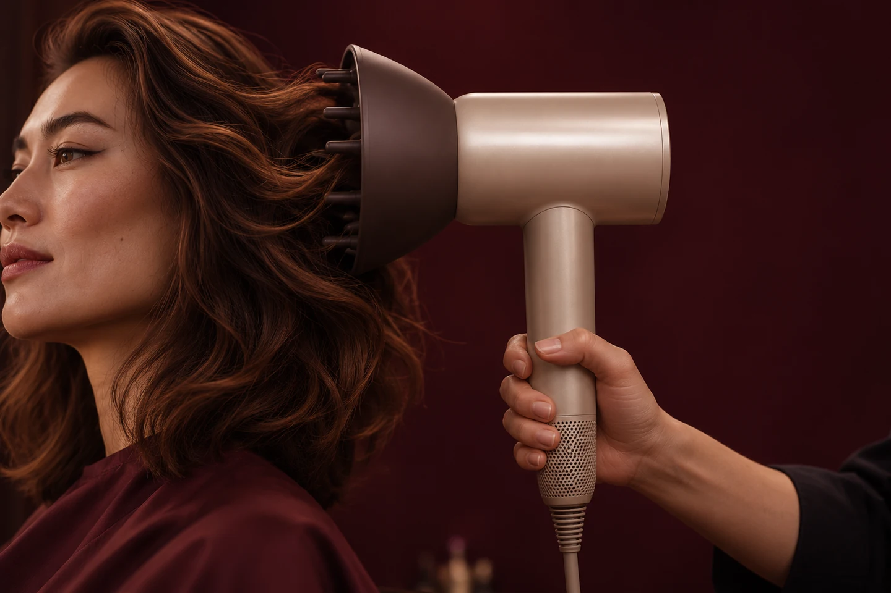
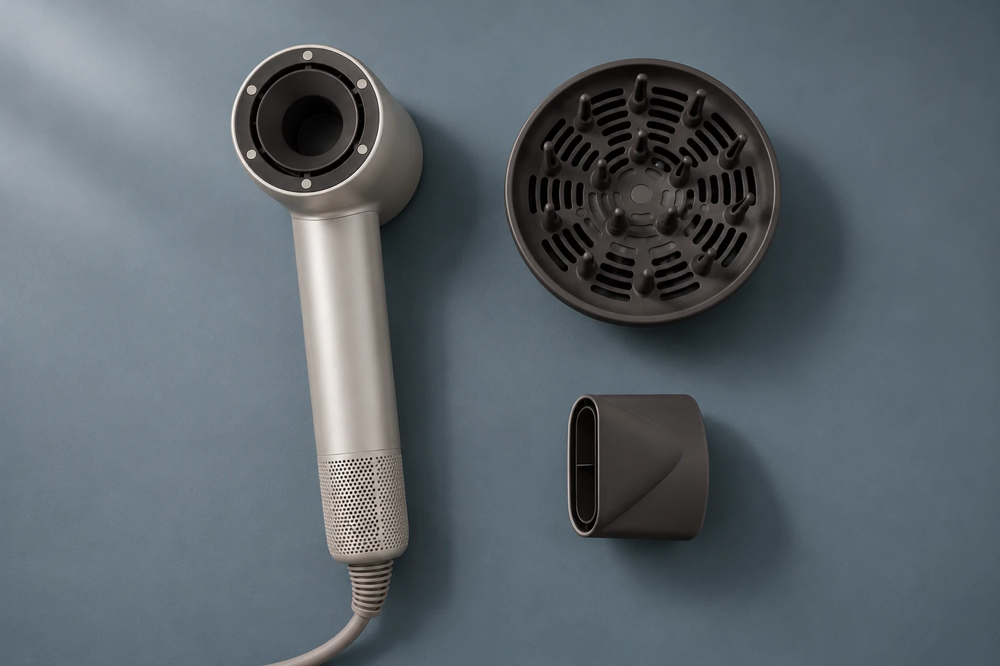
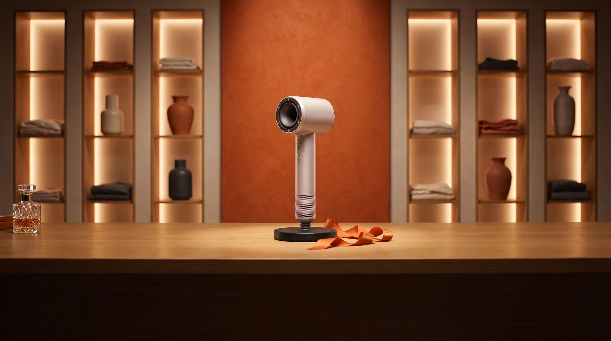

Шаш кептіргіш
Тегіс және толқынды шашқа
Концентратор ауаны бұрым бойымен бағыттайды. Диффузор оны бұйраның айналасына таратады.
- BLDC қозғалтқышы
- 110 000 айн/мин
- Қыздыру
- 4 режим
- Магнитті бекітпе
- 2 саптама
Магнитті саптамалар қалай бекітіледі
BLDC
Ауа тұтқа арқылы кіреді
Тұтқаның төменгі жағындағы саңылаулардан қозғалтқышқа ауа кіреді.

Екі саптама

Магнитті бекітпе
Шеңбер бойындағы алты магнит
Саптаманы ауа шығатын саңылауды қоршаған сақинаға жақындатыңыз.

Тұтқадағы басқару

Шаш кептіргішті қосу
Тұтқаның үстіндегі дөңгелек түйме фенді қосып-өшіреді. Оның астында кішкентай индикатор бар.
Ауа ағынын реттеу
Қос перненің үстіңгі бөлігінде желдеткіш белгісі бар. Ол ауа ағынын реттейді.
Төрт қыздыру режимі
Үш толқын белгісі бар астыңғы перне қыздыру режимін ауыстырады. Ауа ағыны көршілес пернемен реттеледі.
Диффузормен сәндеу
Тостаған бұйраны астынан ұстап тұрады.


Жиынтықта
- Шаш кептіргіш
- Диффузор
- Концентратор
Ваннадағы сөреде
Корпусы ықшам, саптамалары магнитпен бекітіледі: сәндеуден кейін шаш кептіргішті оңай жинап қоюға болады.

Сипаттамалар
Барлық параметрлер 8
- Модель
- HCD1002-CE
- Қуаты
- 1600 Вт
- Температура режимдері
- 4
- Қозғалтқыш
- Щеткасыз, BLDC
- Айналу жиілігі
- 110 000 айн/мин
- Саптамалар
- Диффузор және концентратор
- Қорек кернеуі
- 220–240 В · 50/60 Гц
- Иондау
- Бар
Басқа феннің саптамасы үйлесе ме?
Осы шаш кептіргіштің өзіне арналған магнитті диффузор мен концентратор бар. Қосымша саптама алсаңыз, үйлесімді үлгілер тізімінде осы феннің көрсетілгенін тексеріңіз.
Қозғалтқыш айналымына қарап, шаштың қанша уақытта кебетінін білуге бола ма?
110 000 айн/мин — щеткасыз қозғалтқыштың айналу жиілігі. Бір тұтам шаштың кебу уақыты оның қалыңдығына, бойындағы ылғалға, таңдалған саптама мен температураға да байланысты.
Жұқа шаш тұтамына қызуды қалай таңдаған дұрыс?
Алдымен өзіңізге жайлы төмен қызуды таңдап, фенді шаштың бойымен жылжытыңыз. Төрт режимнің бірін таңдағанда жылуды қалай сезінетініңізді және шаш ұшының қаншалықты тез кебетінін ескеріңіз.
Шаш кептіргішті сапарға алып баруға бола ма?
Бұл фен 220–240 В, 50/60 Гц желісіне арналған. Сапар алдында баратын жердегі кернеу мен розетка түрін тексеріңіз. Ашаға арналған қарапайым адаптер желі кернеуін сол күйінде қалдырады.



Шаш күтімі
Шаш кептіргіш
[39 990 ₸]
- [Қоймада бар]
- Жеткізу [1–7 күн]
- Кепілдік [12 ай]
Сатушыға сұрақ қою
Мәтінді көшіріп, сатушыға жіберіңіз. Тауар атауы енгізілген.